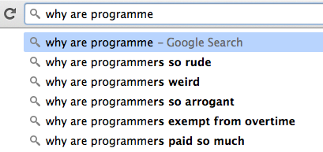
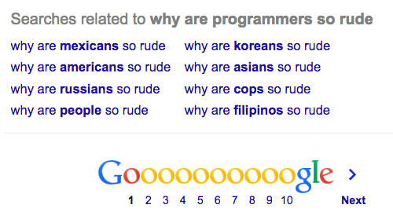
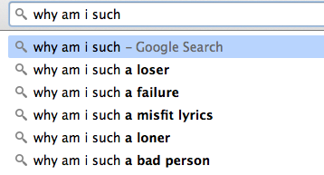
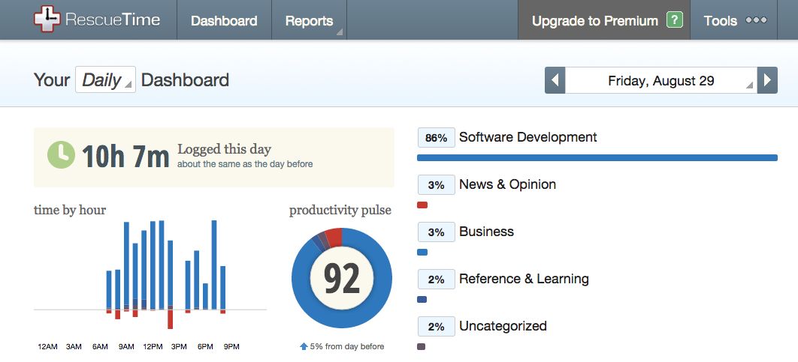
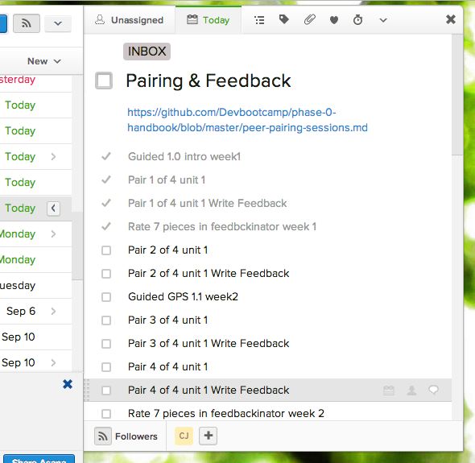
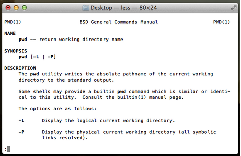
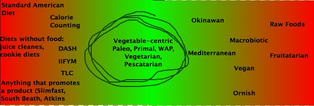
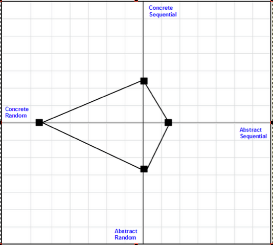

Internet Security:
the Agony, the Ecstasy, the Ninja Gingers
May 2015
Recently I’ve been pondering security. Last week I met some of the wizards from Clef who are more or less my neighbors in downtown Oakland. I was impressed: an app that removes the agony of remembering a thousand passwords that you can set up in under 60 seconds - but back to that in a minute.
At Dev Bootcamp I had the pleasure of attending a lecture by Laurie Voss, CTO of NPM (highly recommended - see it here). Something Laurie said struck fear in the crowd of wanna-be programmers, “You can’t win. It’s not how can you prevent your site getting hacked, it’s when will my data will get stolen.” Takeaway being: do everything possible to protect your user info, and invest in solutions that make hacking as difficult as possible for your opponents.
My favorite hacker stories come from an acquaintance whose husband, an “unassuming ginger,” was once paid by companies to fly around the world and try to break into their networks. We’re talking ‘rappelling off the roof’ type shenanigans, though honestly, he’s had a lot of success using far less sophisticated tactics. Case in point: he was trying to figure out how to introduce a worm into the system of a very well-known tech company. After a few days of scratching his head, he purchased a hundred flash-drives, loaded them up with his parasite, and dropped them in the parking lot before the early shift. Want to guess how many workers picked up a flash-drive, headed upstairs, and unwittingly gave our Ninja Ginger unfettered access? I’ll tell you this: he was celebrating his latest victory and sipping margaritas well before the sun went down that day.
As I entered the midpoint of DBC we learned about security and authorization, kicking off with how to implement the BCrypt Ruby gem, a salt & hash solution, where the day’s lecture started with the warning: it’s not foolproof. A cursory search tells my BCrypt is in fact very, very hackable - but BCrypt hedges against wide-scale attacks by being slow to verify a password, making the time investment to an attacker trying to brute-force their way into paydirt, far from cost or energy efficient. For now… No surprise that password-cracking has become exponentially more sophisticated as storage becomes cheaper. Read this article and really think about you online banking. And take these guys who are on the right side of the law, providing penetration testing resources. Look at their tagline and tell me you don’t want to put your savings in your mattress:
Sadly passwords are exploitable, just like people. Well, because passwords are created by people. It’s 2015 and I’ve seen many a person proclaim themselves ‘a hacker’s dream,’ by maintaining one password for ALL sites. How many accounts do you think have been hacked because the password is “password?” Check out this lifehacker article if you really want to lose some sleep. Our Ninja Ginger preys a fair amount on the vulnerability of people. He once gained access to highly-secure building by studying the security guards, pegging one as homophobic, and getting ushered right in when posing as a well-to-do over-the-top-touchy stereotypical gay man who really, really, really had to use the bathroom.
It’s a jungle out there. So what’s a programmer to do? One of the latest solutions I like takes the human-element, the password, out entirely along with the use of tokens. With Clef users verify their identity by using the computer that’s already on them: their phone. Unlike the traditional complaint with mobile phone two-factor authentication, Clef can work offline.
Ninja Ginger had always wanted to rappel off a roof. He took an assignment that involved breaking into a top-security building: as in, NSA secrets housed on-site With a trunk full of anchors, slings, and a harness, poised in the woods with a set of binoculars, he was disappointed to see the guard duct-tape the backdoor’s latch so he wouldn’t be bothered key-carding his way back in after a smoke-break. No rappel needed.
Be safe, people!
Close

I Got 99 Problems But The Tech Ain’t One
April 2015
What's the biggest issue facing the tech industry? It's filled with people.

The search suggestions here tell a story.
Think how many times non-programmers must have googled 'WTF is wrong with the programmers' to fill all 3 of the top slots. Then realize, that most of these people followed-up, asking 'why the hell are those people get paid so much' (...more than me. With the implication that no asshole should make that much money).
The one line we might assume is actually from programmers is second from the last, 'why no overtime?' because these same 'weirdo' programmers are on a 12-hour day burnout cycle, questioning why things are so damned unfair.
Here's the trick, it's not a programmer issue, it's a people issue. Look what pops up at the bottom of the page:

Terrible, right? So what is wrong with people? And what is wrong with the people googling this shit? Oh, I don't know - choose one:
- passive aggressiveness
- can't communicate
- 80's hair metal
- anger management issues
- don't know how to listen
- too much / not enough religion
- narcisscism
- Mel Gibson
- can't deal with stress
- gluten
- emotional immaturity
- "society"
- aggregate toxicity
- spandex
Doesn't matter. Whatever you'd choose is not the real answer anyway. The only thing wrong with other people is you. Yeah, seriously.
Maybe that programmer dude was rude to you because he's having a bad day. Or maybe he just thinks your an asshole. Or stuck-up. Or stupid. Doesn't matter. You can't control what anyone else thinks. Don't even bother youself with it - other people's thoughts of you are none of your business anyway. The only thing you can control is you, your thoughts, and actions.
So someone was a jerk to you. Maybe it bothererd you so much that you googled [group of people] + [certain behavior]. Why is this eating you? Do you need everyone to like you? Do you feel immediate rage if someone is disrespectful?
This is the secret of the universe: sort out the "you" issues and the "them" issues clear right up.
It's no wonder people are total donkeys - look at all the shit going on inside their heads (not to mention that song from Rudolph is cringe-worthy. Who are these maniacs that wanted the lyrics?):

The solution a.k.a. a 30 second primer on every self-help book: Define your boundaries. Assume the best about other people or at least assume they don't know any better. Cut people some slack. Share. Be polite. Figure out how to be direct when someone crosses a line or if you're unhappy. Listen really well. This helps people listen to you when you need them to. Are you the burnt out programmer from above working 12 hour days under the crushing weight of deliverables set by some higher-up who fundamentally has no idea what's possible? What's a reasonable boundary that will keep your sanity in check? Have a direct conversation and if things don't change, get the hell out of there. Don't exchange your health for a paycheck. Take care of yourself. Take care of others. Don't be a jerk. And please, use Google searches for good.
Close
Why DBC?
November 2014
Week 1 of Phase 0 and yes, it moves fast. Really fast. The 15-20 hours a week is a pretty bad assessment. More on that later. So a week in and I've got a dedicated
DBC blog and two assigned posts up, including today's reflection on why Dev Bootcamp.
With a veritable buffet of coding schools available these days, both online and in-person, why Dev Bootcamp? That is...
besides the obvious goal of becoming a badass software developer.
- EQ: Once upon a time, not long ago, I was the worst manager. Sadly, I was put in charge of 20 people. I didn't know how to listen, I talked over people, I could not control my emotions, give or take criticism, and I lived on planet Passive Aggression. In my earnest hopes to stop being such as asshole I stumbled onto Travis Bradberry & Jean Greaves' book Emotional Intelligence 2.0 replete with before & after tests. I would consider this time "the turning point." I was thrilled to see the DBC website refer to Chade-Meng Tan's video series on his book Search Inside Yourself, a primer on using Emotional Intelligence to connect and work well with others, find success, and generally get over yourself and get along with those around you.
- Yoga: I saw a documentary about Yoga several years back called Enlighten Up. The premise was a woman deeply believing in the life-changing abilities of sustained yoga practice finds a ‘normal guy,' and has him do daily yoga and record his experience. He doesn't become a great lover of yoga, but his life does change and the doc ends with him strengthening his family relationships. I've had this experience. At 23, a Bikram yoga studio opened down the block from my apartment in Bridgeport, CT. They had deals and discounts if you actually showed up every day - so I did. I spent nearly every night there for 6 months. Frankly, yoga got really boring: Bikram is the same set of poses every class without deviation. But despite the boredom, something had changed. The only way I can describe it, is I felt like my brain had been rewired. All of the sudden I was thinking clearly about my life and what needed to change. Long story short, I dumped a boyfriend, quit a go-nowhere job, and drove to California. Since living in California I had one similar experience when I started going to a meditation-night at the since-closed East Bay Meditation center; an experience that caused some deep life reassessment and lead me to check out concepts like EQ. I "get" DBC's mandatory yoga sessions. I believe everything ever written about the magic of yoga and meditation to help you live in the now, be more productive, and see the best path to fixing what's wrong.
- DIY: As I close on this week's DBC Phase 0 Week 1 challenges I watched Shereef's fireside chat, with the message that we are all wholly responsible for our own education. You get out what you put in, and as much as I wish for a magic pill to swallow that imparts me with awesome coding knowledge (I'm sure Google is working on this), the more I study, without burning myself out, the more I'll learn and one day be able to ultimately give back in the form of building something cool that benefits someone somewhere.
Have you ever had a yoga/meditative brain rewire? Shoot me an email and tell me about it.
Close
Productivity Slam: A Tale of 3 Websites
October 2014
What are your favorite websites? Are they the same as the websites you visit most often? Do you have a way of knowing? I do. Check this out.
RescueTime (https://www.rescuetime.com/dashboard)
- Function: Install their tracker and RescueTime will silently lurk in the background tracking each site, app file, or tool you visit, and for how long. Customize the hours or types of sites tracked, as desired. Set goals and alerts to keep on track.
- UX & Design: Their free offering allows you to easily navigate to productivity snapshots across days/weeks/months and change classifications as needed. Clean graphics show you how you're spending your time at a glance. Their premium options include distraction block-out (similar free tools available elsewhere) and ability to enter offline productivity hours like a Sales call or a client meeting. My only frustration is the inability to set custom times to generate a productivity report e.g. if I want Weds-to-Monday stats, I manually collate day by day. Overall this site satiates the inner control freak and can lend some alarming news on just how much time you spend down the rabbit-hole.
- How I'm using it: Dev Bootcamp requires time-tracking of each week's phase-0 exercises to assess if they're doling out too much or too little to the new cohorts. Rescuetime makes this a snap; which is great, because frankly, I have zero time for anything else right now:

Asana (https://app.asana.com)
- Function: Make to-do lists. Share to-do lists. Never forget a thing.
- UX & Design: Create projects to control access or keep organized, tasks with due dates and tags live within each project, and users can populate a task with sub-tasks. Set-up email reminders to scold yourself when you're not meeting goals on time. The simplicity of this tool is key. Lose a task? Throw it into the searchbar. Undo with a click of a button. Drag & drop tasks between projects. Set up recurring reminders on tasks. My only gripe with Asana has been connectivity. While I only recall two major outages in the past 6 months, one lasted about 6 hours and caused the most unproductive workday ever. Offline access would make this tool a dream come true.
- How I'm using it: Asana has been my house of worship for many years. I may not check Facebook every day but I absolutely check Asana every morning. With the phone app I keep my lists handy of recommended books, movies that friends thought were cool, and ideas as they come to me. Remember that time you got really drunk and told me you loved Fievel Goes West? Probably not. But it's a note in my “gift ideas” project and I will blow your mind with the perfect present on your birthday. Oil changes, teeth-cleanings, and checking my credit score annually? Automated pop-ups. I've fallen deeply in love with the subtasks as I sifted through Dev Bootcamp's stack of to-dos involving pairing, feedback rating.

A Life of Productivity (http://alifeofproductivity.com)
- Function: What started out as Chris Bailey's 1 year experiment to maximize productivity (ayearofproductivity.com) grew to a more permanent fixture. He explores productivity hacks, practices like meditation, and self-experiments like limiting cell phone use, napping, reclusion, 90-hour work weeks, and more.
- UX & Design: Clean, simple, to the point. This site's layout is easy to maneuver, dusted with professional color-saturated graphics, and inline with the productivity ethos, a handy box at the top of each article with an estimated reading time and the top takeaway.
- How I'm using it: As an avid Quantified Self and productivity nerd this is one of my go-tos for inspiration (especially when I know a day-long slog through software dev materials isn't delivering the goods to my brain in an easy-to-consume manner). After dropping in the screenshot of my 10-hour workday on Friday, I zeroed in on Chris' latest gem, a not-so-gentle reminder that breaks and chill-out time are vital to truly boosting productivity, health, and sanity, aptly named, "Chances are you spend way too much time staring at screens every day".
What are your favorite Productivity sites? Shoot me an
email.
Close
Doing ALL THE THINGS part 2.
How it took 27 hours to reinvent the RPN wheel.
October 2014
On Thursday DBC granted my cohort access to the Socrates ‘warm-up’ challengesplus word that instructions would follow on Monday. There’s a nifty tab with 20 or so exercises that shows you who has finished the challenge, and once you finish one, you can everyone else's answers.
A few hours after the email went out I saw my comrade’s pictures populating in the finished field, so I got to it. 20 exercises = done in under 24 hours.
I could say something like ‘I love a challenge,” but the truth is I’m a maniac. I need to WIN. And while I know this mindset is not altogether ‘healthy’ per se, it’s gotten me incredibly far career-wise. I’m trying to learn how to ‘not’ be insanely competitive about everything. I plan to start meditating in the coming weeks.
When I started going to crossfit classes I was weak, slow and uncoordinated. A year later I could squat, clean, and press with good form, I had ramped up on all my lifts, but I was the weakest in class, and usually the slowest. Did I have fun? Yup. Did I consciously know that being the weakest didn’t matter? Yup. Could I stop the incessant mental comparisons? Nope.
I talked to fellow lifters about how crossfit was a real ‘humbling’ experience; sticking with it even though I’d never “win.” No one really got it. But my boss did. My boss, the only person I know as competitive as I am, totally got it. I said something one day about, “I know crossfit’s not supposed to be a competition,” when he cut me off emphatically saying, “Of course it’s a competition!” I've heard about the upcoming DBC discussion on superego. This may be medicine.
Mid-Friday I realized there were more Socrates exercises to do squirreled away in another tab (remember: no instructions until Monday). I got to work on the next set of problems, many of which took significantly longer than the day before. By Saturday morning I was down to one. One very...very... hard problem.
By Sunday night I was broken. I had logged a culmulative 23 hours of working on a reverse polish notation calculator. (RPN is actually super cool). I sent three separate pleas for help to StackOverflow. (Not a hospitable place for newbies). I read ruby-doc.org pages until I couldn’t see straight. I reviewed every Ruby RPN calculator that came up in the first pages of Google results. I cursed everyone in history who had a hand in creating regexp. I screamed, cried, and pounded my fists on the couch. It was, just simply, not happening. Did it matter? Probably not. Until I get the handbook I won’t know exactly how many had to be done. For all I knew this was extra credit.
I hadn’t had a bout of insanity like this since since I first got into management a decade ago. Well before I understood the importance of having a life outside work and taking breaks. The reason was clear: I want to succeed and I'm afraid. Succeeding is winning. And I’m terrified of walking into DBC and not being smart enough to figure it out. After my office was shut down, I dread going out to get another job doing exactly what I was doing.
And then it happened. Monday rolls around, so I decide to start fresh on the RPN calculator. An hour later I actually got a part to work. I cannot explain why this miracle took place. In the next hour my brain magically produced a sprinkle of regexp that tied the whole thing together. One more hour and a Stack Overflow question later, I was done. My RPN passed.
If you’re reading this blog, I should tell you that my behavior was completely unacceptable. I’ve coached a ton of employees through stress management and this time I followed none of my own rules. Take note, friends:
- Take breaks. Take breaks and do something that calms you down.
- Eat properly. Don’t let your blood sugar crash when you’re working on something tough.
- Conversely, don’t consume a shitload of caffeine and sugar because you’re stressing. (Damn you, salted caramel gelato).
- You have to figure out and address your stress long before the tears fall. There are definitely signs.
- Your brain is really good at solving problems, but it doesn’t operate on your schedule. Sleep helps. A lot. So does exercise. So does chilling out.
- At the end of the line, you’ve got you. That’s really it. No matter what, you need to treat yourself like you’d treat your best friend. The things you accept for yourself (relationships, diets, and especially what you say to yourself) must parallel what you’d want for someone you love.
It’s Monday night. No handbook yet, but the RPN is done. The victory feels shallow because I went about it the wrong way and made myself crazy. But it's D-O-N-E.
Want to check out crossfit? This gym is awesome: Grassroots Crossfit.
Close

Dev Bootcamp’s Pre-Pre Phase 0.
Thoughts on doing ALL THE THINGS
September 2014
With months of time to kill before DBC Phase 0 kicks off I’ve been spending all free time trying to do and learn ALL THE THINGS. I read blog after blog from current and former DBC students, trying to glean hints of what I should learn, and ultimately created the most epic list of topics, books, and tutorials. So epic that I had far more to-dos than time to do them.
- No one can do ALL THE THINGS.
- Bootcamp will be the same. With what looks like 100-hour weeks in the near future, it’s not reasonable to expect full mastery or recollection of ALL THE THINGS.
- I’m writing this at 2am. I rarely have insomnia.
My mom tells me from the time I was old enough to sit in a highchair I always wanted more. Literally. She could not hand me a sandwich without this small tyrant demanding, “MORE!” (meaning she’s cut my food in half an hand it back). I still struggle with “more.” More got me here - into programming school - but also piled on the anxiety through trying to learn the most more there is: ALL.
The important things are better than ALL THE THINGS. Doing ATT is a myth. This is a damn hard lesson to accept.
Close
Your Resume: the Basics
September 2014
In the last 10 years I’ve probably looked 5,000 resumes. Maybe more. I can cut through a stack of 100 in minutes. Here’s what is guaranteed to get your resume thrown in the recycle bin:
- Typos. Obvious grammatical mistakes. If you’re applying for an office job, where you’d be writing emails all day, best not fuck up on this one.
- A string of jobs worked for only a few months. It’s insanely expensive to have an empty seat. It costs overtime to fill the gaps, money to post and recruit, and worst of all, time spent interviewing people when you just need a butt in the seat. No one will gamble on you if you can’t demonstrate that you’ll stick around. The one exception here is temp jobs. If you bounced around every few months because you were a temp, make that really clear.
- Fake degrees. You got your BA in 9 months? Really? Yes, I will absolutely google that. If you’re Doogie Howser, you’re getting a call. Otherwise, if you paid $60 for your online “college degree,” I have doubts about your decision-making abilities.
- Shotgun blast resumes. You can send 1 resume to 100 postings, or send 10 tailored resumes to 10 openings. If you think the odds are in favor of the former, you’d be wrong. More than once I’ve received resumes with bust-waist-hip measurements from models and actresses. Something tells me they were not enamored with the idea of data-crunching in our cubicles.
- The overshare. Is your emsil SexMuffin69 or SmokeWeedxDaily4Life? Yeah, not good. If there are no warrants out on you, okay, well done, but why am I reading about it on your resume?
- Telling not showing. There’s a trend in resumes of the last 5 years where a synopsis bubble at the top rattles off vague and banal statements like, “works well as an individual or in a team.” “Good attention to detail.” “Goal-oriented.” I should be able to glean this from the story your resume tells. Show me you’re a team player.
Last note: tailor your resume. It does not need to take long. Show that you have skills listed in the posting. More and more robots scan resumes, assign a keyword match, and throw away perfectly good candidates.
Close

DBC Pre-work Learning Competencies
August 2014
...and back to the DBC Prep work.
Command Line Learning Competencies:
- Navigate between directories: Use the cd command + destination or path to destination.
- Create a new directory: Use the mkdir command plus give it a name.
- Delete a directory: Use the rmdir command plus identify directory for purge.
- List files in a directory: Use the ls command.
- Identify the directory I are in [sp]: the pwd command will print the working directory.
- Move a file between from one directory to another: From what I can tell you cannot really ‘move’ a file. You can copy (cp) to a new place. The move (mv) command just renames the file in question.
- Copy a file or directory: copying is cp plus identifying the file to be copied.
- Open a file in a text editor: I got things set up where I can open sublime from terminal. I can open files from sublime or from navigating to the file itself. Can I open a file in sublime from terminal? The internet tells me ‘yes.’ Saving this for later.
- Run a ruby file: in terminal write in ruby name-of-file.rb.
Ruby Learning Competencies:
- Identify strings, integers, arrays, hashes, floats. Strings = letters, numbers, and symbols saved as text. Integers = numbers. Arrays = collection of objects or a collection of collections. Hashes = key-value pairs. Floats = integers with fractions of a whole number (decimal points).
- Define a variable. Something that represents something else.
- Interact with a user via the command line (ex. gets). gets.chomp will take user input and remove the ‘return’ from the end of the input.
- Describe flow control using if, elsif, else, and unless. If has an implicit ‘do something’ when a certain criteria is met (when something is true). Unless has an implicit “keep doing” something until criteria is met (until something is true). Else gives an alternate option when an if criteria is not met. Elsif gives multiple options when two options (if & else) won’t cut it.
- Convert a method using if/else to case using when. If/else work together, including additional elsifs in between the two to account for more arguments. When allows you to build conditionals just using the word when and else. This seems to save line space, as well.
- Compare = and ==. = means equals. It’s a declarative statement. == is a question.
- Describe loops and explain how the following work (#times, #each, #while, #until). Loops are repetitive actions a computer will tirelessly perform. Times is a finite loop; as in 10.times do … will do something 10 times. The each will perform an action on a series of items. While & until are pals. While keeps a loop going until a condition returns false. Until keeps looping until a condition is true.
- Differentiate between arrays and hashes. An array is a collection of stuff, whereas hashes have stuff and a secondary component: keys and values. An array could be [ticket, $12] but the hash {ticket => $12} tells me my key, the “ticket,” is worth a value of $12.
- Describe what methods, blocks, and classes, and objects are in Ruby. Methods are saved block(s) of code that perform an action and usually require a value. Blocks are action-packed bits of code that begin with do and end with end. Classes are packages of saved data like variables and methods. Objects are like nouns: they can have verbs (methods) attached and/or attributes, like “CJ”(noun).length(verb) #==> 2(attribute).
- Use IRB to play with Ruby code (HINT: Type irb in your terminal and test your ability to do each of the aforementioned competencies). irb allows you to execute commands directly in terminal instead of saving a file elsewhere.
- Debug syntax errors from error messages. Important stuff: look for the line where the error is found (after the filename). If you see a ^ you’re in luck - this points to where a problem is seen. ‘Fixnum’ usually points to an issue of strings and integers mixing it up.
Close
Perfect Workflow in Sublime 2 ch. 1-3
August 2014
Onward with DBC's pre-Phase 0 work! Despite my first hand-holding and kissing-at-the-dance text-editor relationship with TextMate, I've gone on to seek true love with DBC's editor of choice: Sublime Text 2. Maybe one day we'll be married.
Services and Opening Sublime From the Terminal
- Automator. Who knew that was there. This little piece of magic has huge possibilities.
- Typing !! in terminal references the last command you entered.
- Thanks to this tutorial, I can now type subl . into terminal and pull up my text editor.
Multiple Cursors and Incremental Search
- Command F to find replace
- Command D will let you highlight the next sequential match, and replace them as needed.
- Ctrl Command G will select every occurrence of the word
- Hold down option and drag to highlight just a column.
- Shift Command L will let you enter/adjust whole lines at a time.
- Command I to incremental search
The Command Palette
- Command N w/n Sublime to open new file.
- Save a new file with the extension .rb, .js, whatever, and it will save as that file type. Lower right hand corner allows you to change the syntax.
- Shift Command P is the command palette.
Instant File Changing
- Command P - go to anything.
Symbols
- Command R to search within a file, or Command P + enter @
- Jump into a new file at the desired spot by using Command P, enter name-of-file @ place
Key Bindings
- ST2 > Preferences > Key Bindings Default: master list of commands.
- “Super” = command in the code.
- Never save edits in the default file (you’ll be overwritten upon update).
- Save your edits in the Key Bindings USER file. Watch for extraneous commas.
- Question: what will happen when I try to assign a shortcut sequence that is already in use?
Installing Plugins Without Package Control
- ST2 > Preferences > Browse Packages.
- I added an alias to my bash profile called sublimepkg. Now I can type this command into terminal, and voila, the package menu appears.
- To install a package that is not available through package control, I can copy the read-only git address, browse to the packages directory, and type in a command to clone a version of the package to my packages directory.
Package Control
- Download package control from w.bond.net.
- Shift Command P to navigate to install packages, choose package, done.
- Shift Command P is the almighty god of this universe.
Your First Snippet
- Holy shit, snippets! The amazing-ness of nearly every tutorial I’ve done so far has been step 1. learn all these crazy things. 2. test that you know them. 3. now we teach you the looker-upper tool we hid from you earlier in case you need something not committed to memory. Infinitely grateful for looker-uppers.
- The prompts are equally mind-blowing (did not run into this in Textmate!).
- Oh wait - you can create your own snippets, too. Must have extension .sublime-snippet to work.
- If you save your snippets in the folder of a language - the snippet will only work in that language. I saved “Jamboree.sublime-snippet” in a new folder called “TestJavaScriptSnippets,” and it works only in JS, even though no source was specified in the file.
- The snippet formula {1:thing} {2:thing} etc. indicates the “stopping points” a.k.a. where tab will take you. The colon defines a default value.
- When saving the cursor start-point, and that point needs no default value, it looks like ${1:} and ${1} both work. In the video he uses ${1}. Not sure if there is an advantage there.
- Command / toggles a line between live & comment.
Adding Snippets Through Package Control
- Snippets are apparently going to be my #1 time-saver in the future. It goes like this: download your applicable pack, pay attention to the commands, use & remember them religiously.
Easier Testing With Snippets
- Package Control is not Kmart - they will not have everything.
- In this video we found some desirable snippets on GitHub, copied the read-only url, hopped into terminal, navigated to the Packages Directory, then went into the Users directory.
- From here we use the git clone (git clone url filename).
- Once we have this new package of snippets, we can also save our own .sublime-snippets in there.
CJ is headed to Dev Bootcamp in the Fall. Here is her shameless plea for help: https://www.youcaring.com/SchoolForCJ
Close
Zed Shaw's Command Line ch. 1-23
July 2014
This week's DBC pre-Phase 0 work kept me knee-deep in Zed A. Shaw's command line tutorial. Printed out a cheat sheet of the commands and breezed along through the first 7 chapters:
Chapters 1-7 Takeaways:
- Command + spacebar brings up a search bar on a Mac.
- When you’re changing directories (cd) using .. will take you a level up. Using ../../ etc. will take you up multiple levels.
- If you’re lost, far away, or want to start fresh, type in cd (with nothing after it) to return to your home directory.
- When you are navigating through folder trees, just like ../../ will take you up levels, you can drill down by using specific names e.g. desktop/temp/things/stuff.
- rmdir only appears to work on files when you are in the parent directory of that file/folder.
- After mkdir there’s a -p. The -p tells terminal to fill in the blanks if the pathway does not already exist. Props to Wikipedia’s entry on mkdir for explaining this.
Questions for later:
- When I was practicing deletions by wiping out a folder tree I made earlier in the command line, I was unable to delete several folders. A check shows me nothing is inside them…
This chapter gives you no blurb, just a jump right into “Do This.” By the time I got through typing I was utterly lost. Thankfully the explanation is at the bottom of the page.
Takeaways:
- pushd means “get the hell out of where I am, but keep it on standby because I might go back, and go to this new place I specified”
- After you enter a pushd command, terminal tells you two things:
1. ~your-new-location
2. ~where-you-just-were-and-is-now-on-standby
- If you pushd to a third location, you get:
1. ~your-new-location
2. ~where-you-just-were
3. ~original-on-standby-location
- From here I can enter popd to return to my last location, eliminating the new location from the on-standby list. This is kind of like in Ruby where the “pop” command removes the last object from whatever string/collection you’re working with.
- You can enter pushd without specifying a new location. Doing so takes you to your most recent on-standby location.
- I found out that if you have 3 standby locations loaded up, pushd with no location will cycle between the last and second-to-last places you’ve been (never gets back to your first standby location).
Questions for later:
- If I’ve got 3 places loaded up on standby, how can I cycle back to the earliest one without using popd to remove the latest option?
Takeaways:
- Creating a new file = cake *ahem* I mean, touch.
- Copying a file = really straightforward: cp filename new-filename. Remember to enter the extensions (.txt, whatev).
- Copying a file into a folder requires you to label the folder foldername/ (with the forward slash on the end).
- You can list the content of a subfolder, if you are in the parent folder, by using the filename/ e.g. if I’m in temp, I can put ls stuff/ to see what files are squirreled away in the stuff folder.
- Wikipedia is the shit. After fruitless googling on the “-r” in the cp -r command, I found the Wiki on cp to clear it up. The r is for recursive(ly). Recursive is defined as mirroring something or repeating something in a similar way. For my immediate purposes, this means I can copy a directory in the command line and I’m really copying the directory AND its contents.
- You CAN copy files to places besides subfolders of the directory you’re in. So we’re reusing the bits we learned in the cd lesson. To copy a file to a parent, use ../../ with each set of dots representing one directory up. To move down, use the names of the files stuff/things/toast. You can also move up & down to a lateral set, like:
cp awesome.txt ../../programs/mystuff/teststuff
Questions for later:
- According to the link that helped me sort this out, you can also copy a file from an outside directory to the one you’re in. Following their instructions made some crazy shit pop up. Guessing this is because this set of instructions is for unix not Mac...but we’ll see…
Chapter 11, 12 13
- Mv seems to be the same as ‘rename’ not 'move.' Scrolled to Zed’s notes as shazam! Got that one right.
- The less command loads the file contents into terminal - but away from your command line business. Scroll up/down as necessary. q to quit.
- I tried displaying a file without typing in the extension - this did not work. Remember the extension.
- The cat command loads the content of a file and spews it into the command line. Not as pretty as using the less command.
Chapter 14
- Removing a file - rm - pretty simple.
- rmdir will remove a directory unless stuff is inside.
- rm directoryname/filename.extension only removes the file.
- rm -rf directoryname appears to delete the directory and all its content.
Question for later: What does the
-rf stand for? root filesystem?
Chapter 15
- Apparently this guy is called a pipe: |.
- This reads linearly, so anything happening on the left is “piped” over to the command on the right.
- The trick to using < and > in command line is remembering direction. My mnemonic device for this one: go big or go home. Always start with the “larger than” side.
- If you are copying text into a new file the destination file does not have to exist. Simply type less existingfile.extension > newfilename.extension.
The mirror image of Ruby’s array ‘smoosh’ symbol has appeared. The
>> will append data from the left to the right. This requires a command to work though:
less ex12.txt >> ex15.txt will work but
ex12.txt >> ex15.txt will not.
- I feel extraordinarily lucky that I’ve spent years in a system that used as asterisk as a wildcard. “Asterisk = wildcard” lives deep in my bones.
- Unlike the wildcard-friendly app I’ve used, command line’s * can be used at the beginning of a word, can represent multiple characters, and can be used mid-word.
- You can search for things using find . where *I think* the period is saying ‘within the current directory & its subfolders.’
- The find command should be 1. find 2. where-to-look 3. criteria 4. what-to-do. Props to this link for the explanation.
- You can replace the period with the name or path to a specific directory, in which case only that directory & its content will be searched.
- You can also use the ../../ trick to move up the tree, and/or specify additional folders to target a lateral destination.
Questions for later:
- What do -name and -print need the dash?
- Write to a new file using cat > a-file-you-create-by-typing-it-here.extension.
- Ctrl + d is your escape once you’ve typed in all the text you want to go into the file.
- Command + d did some wacky split-screen stuff that will probably be handy down the line. Control, don’t command, your Cats.
- Also, you need to be on a new clean line before you hit Ctrl + d, otherwise some other wacky stuff happens.
- The grep command searches the content of files. The formula is 1. grep 2. word-you-want-searched-or-phrase-in-quotes 3. file(s)-to-search.
- When entering files-to-search you can use a wildcard * to search or just list out all the files you want searched.
- If you want to search within a file outside the directory you’re in, you type in the folder tree before the filename, like desktop/temp/newestfile.txt.
Questions for later:
- What is the purpose of the Command + d split screen? Why/how would someone use this?
- When I ctrl + d on a non-empty line of text, what is that business about?
Dear Zed, no offense taken. I appreciate the trick - it got me to learn way more.
- So a handy man command will bring up a reference page of what that command does.
- I anticipate one day I’ll need the inverse of this, like, “what the hell is the command that does that search-through-it-backwards-thing?”
- I found that the dash-letter combos like the -L and -P in the screenshot below work if you put them in brackets after the command, like $ pwd [-p] .
Chapter 20
- Holy word vomit, Batman. Ever had a cat fall asleep on your keyboard when you got up and left the room? Yeah, apropos command is kind of like that.
- As heart-palpitating as the results of using apropos are, this unwieldy cache of data will be doubtlessly be useful once I’m weeks out from drilling vocab.
Chapter 21 & 22
Ugh. So much info. I’m not sure what is important. Here’s where I am:
- The PATH is something you can check out to determine... where to save stuff?
- Sometimes you may need to change the path to... change how other stuff works?
- I found this page that rather succinctly goes over the steps to change path.
- I think I've rounded up all the variables within env. Definitions below:
- rvm_bin_path= The Ruby Version Manager and where it lives.
- TERM_PROGRAM= The name of your terminal. Perhaps the default program that brings up terminal?
- GEM_HOME= The default place where gems will be installed. Also where Ruby will look for gems.
- SHELL= The “shell” is outermost layer of a program, that connects with the user, taking commands from them and delivering the commands to the operating system.
- TERM= not sure - the thing that gives you access to terminal? Googling “xterm-256color” lead me to a lot of color wheels...
- IRBRC= Something about “interactive ruby.”
- TMPDIR= temporary directory. The home of your scratch paper.
- Apple_PubSub_Socket_Render= a back-end piece for how RSS feeds are handled.
- TERM_PROGRAM_VERSION= The version of TERM_PROGRAM.
- MY_RUBY_HOME= The path to your Ruby files.
- TERM_SESSION_ID= Not a lot online about what session-ID is in regards to terminal. It appears to be temporarily saving something.
- USER= identifies the current user.
- _system_type= the computer operating system
- rvm_path= path to the Ruby Version Manager
- SSH_AUTH_SOCK= SSH is secure shell. This deal keeps things secure and allows you to remote in. Auth = authenticate. Sock = socket or socks? Socks are troubleshooting and cleaner-upper utilities. Sockets are something about transferring packets of data around.
- __CF_USER_TEXT_ENCODING= save of the preferred language and ‘text encoding’ which is something to do with text representing other things.
- rvm_prefix= The pathway to get to the RVM i.e. Users/yourusername/
- PATH= There are so many online resources about working with PATH but nothing that just tells me what the hell it is.
- __CHECKFIX1436934= Don’t know - but I’m #17 on the Apple forums to say “I have this problem, too” re: what the hell is this?
- PWD= print working directory.
- LANG= language used.
- _system_arch= just can’t figure it out.
- _system_version= version of your operating system.
- rvm_version= version of Ruby used.
- SHLVL= identifies the “sub-shell” level.
- HOME= home directory upon logging in.
- LOGNAME= username?
- GEM_PATH= Path to your Ruby gems.
- _system_name= name of your operating system.
- _=/usr/bin/env the last command displayed.
Questions for later:
- Derp. All of the above.
- Why does someone need to check the env?
- Why would someone want to change a path?
- Wouldn’t changing a path potentially screw up existing programs and operations?
- As for changing path - what is important? What do I need to commit to memory?
- WTF is the man env page talking about?.
I liked that Johnny Depp movie
Secret Window the first time I saw it...when it was called
Fight Club. The end of the Command Line Crash Course filled me with the same disappointment. We went strong for 22 chapters and the end felt phoned in, like, “Meh. Here’s some stuff you should know. Go look it up.” Anyway:
Definitions:
- xargs (1 hour for fruitless Googling later). Jesus tap dancing Christ. Something about if you want the data you’re entering to be accepted as an argument instead of a command.
- sudo taking on the power of the super-user/admin to run programs. Potential to create real damage lies here.
- chmod “change mode.” How you can change permissions on something.
- chown “change owner.” How you can alter the ownership of something.
CJ is headed to Dev Bootcamp in the Fall. Here is her shameless plea for help: https://www.youcaring.com/SchoolForCJ
Close
Health: More Advice You Shouldn't Trust
May 2015
It’s impossible to get your life on track without feeling better. We start today with food.
Disclaimer: I’m not a doctor. I’m not a dietician. I speak only from experience and your results will differ.
Eating healthy can be hard. And expensive. And time consuming. And inconvenient. And socially awkward. Here’s the deal: if you don’t take care of your body first, everything else will fail. So let’s go:
I spent time as a vegetarian/vegan for almost a decade. I was righteous as fuck about how I was doing the right thing for my health and the planet for all 8 of those years. Now that I’ve swung over to the primal/paleo/WAP after a digestive/immunity issue I’ve found the familiar camp of authorities, persuasive bloggers, and people throwing out their heart-felt pleas that only if their relative/friend/co-worker would eat the way they eat all the problems in this world would evaporate.

My recommendation is to follow the diet you prefer in the green area, with these key additions:
- If it comes in a box, bag, tin, or from a factory don’t eat it. Don’t eat sugar. A little honey is okay.
- Eat a lot of vegetables. Eat some of them raw. Also eat some fruit. Eat nuts and seeds, but not a lot. Use herbs and spices - but read labels - garbage gets thrown in everywhere.
- Once you stop eating packaged foods you may miss out on the foods fortified with vitamins/minerals once common to our diet. Suggestions:
- Eat a few brazil nuts a day for selenium.
- Eat a little seaweed to maintain iodine levels.
- Take cod liver oil and/or vitamin D pills.
- Take K2 along with vitamin D.
- Take B12 if you don’t eat animals.
- Drink the cleanest water you can get your hands on.
- Avoid GMOs.
- The more carbs you eat the more fucked up your blood sugar is going to be. 150 grams a day or less is ideal.
- Limit caffeine. 1 cup of coffee a day or two cups of caffeinated tea.
- Eat fermented foods - lots of them.
- Eat enough protein. Once you start strength training you need to hit 1 gram of protein per pound of bodyweight, per day.
- Eat fat. Pay attention to what kind you ingest. Studies show most olive oil is rancid. Avoid oils made from grains. Read here for recommendations.
- All the ways grains can damage your digestive tract also damage the innards of the animals you eat. Avoid eating sick animals. Eat pastured eggs, grass-fed ruminants, chickens that eat bugs.
- Eat enough calories in a day.
- If you have digestion issues - eat 3 meals a day, spaced at least 4 hours apart, to allow your migrating motor complex to cleanse your digestive tract.
- If you have a uterus, seed cycle.
- Fasting allows your body to purge broken shit, bad cells, carcinogens, etc.
- Do this at least 1x a quarter.
- Stop eating after dinner the night before and resume eating with dinner the next day.
- If you have health issues, periodically try 3-day fasts.
- Eat grains (rice, wheat, oats, etc.) sparingly if at all..
- Get an allergy test if you don’t feel right or you have digestion issues. Do not eat foods that come back on your tests as an allergy or even a sensitivity.
- If you cannot stick to eating healthy because of social reasons, will-power, [insert excuse here] give yourself a ‘cheat day’ with two freebie meals. Do not eat foods you are allergic to in these cheat meals.
- If you eat animals, make bone broth. Drink it regularly.
- If your moods are not right - read this book (down not align with vegan/vegetarian path).
- Most doctors prescribe drugs to treat symptoms not causes. Many drugs can cause damage elsewhere. Try naturopaths who treat problems without synthetic drugs.
- What you eat is not who you are. Do not be an asshole to people who do not eat like you. Do not push your diet on other people. Answer questions if people ask. Don’t use that as an opportunity to sell your diet to someone else. If and when they want to get on board they’ll come to you.
- Do the best you can. Know that is enough. Try harder next time. Don’t stress on the rest.
Shameless plea for help: https://www.youcaring.com/SchoolForCJ
Close
How Do You Think?
July 2014
What’s under the hood skull? Part III.
The third part of DBC’s Personal Prep section works on identifying your "cognitive style," a.k.a. how you think, based on 4 styles:
- Concrete Sequential practical people who do best in a structured environment that’s A-Z, orderly, and linear. Everything has a right/wrong.
- Concrete Random curious risk-takers who learn by experimenting.
- Abstract Random from-the-heart-people-persons who do better without structure but require emotional support.
- Abstract Sequential people who thrive with research, resources, a thorough explanation of ‘why,’ and the opportunity to work alone.
My results were overwhelmingly in the Concrete Random camp, meaning I’m competitive, self-directed, hands-on, rarely accept outside authority, vehemently strong-willed, and above all want to cut through the shit to get to the point. Yep, all true.
From a blog post for parents of CR children I found these two gems:
- “If I lay down a rule, he automatically wants to know the consequence. His brain starts running scenarios with loopholes. And then, he's going to measure if suffering the consequence is worth breaking the rule IF he doesn't like the rule. If it's a good rule (as evaluated by him) he'll follow, no problem.”
- This pretty much covers every conversation I’ve ever had with my boss. I also feel a sudden urge to call my mother and apologize.
- “...teach him to spot self-serving, exploitative types who might pick up on this trait and use it to control your CR. Example: "You (adult sales CR guy), I'll bet you couldn't land that account." Then your CR spends less and less time with wife and kids becoming a workaholic to try to prove him wrong. The CR kid needs to know that this trait can be wrongly used to lock him down and jack up his life.”
- Certainly something I wish I learned earlier in life having fallen victim here.

This exercise reminds me of this recent article on motivation that posits people have two types of goal orientation:
- mastery orientation: motivation through the challenge of learning something new.
- performance orientation: using existing skills to strive for excellence.
As someone continually experimenting with something (this week it’s K2 supplements & driftwood coat racks) I fundamentally have trouble understanding what being performance oriented feels like. Mainly because excelling at one thing strikes me as profoundly boring and opportunity-limiting; I’d rather be proficient in several languages than a master at one. Probably the reason coding appeals to me: I know I will never be one of the all-time great masters of Ruby, but I will keep chasing languages to add to my toolbox.
Overall I wish I had come across these profiling exercises earlier in my career (or at least before my office’s layoff came down). It would have been enlightening to see what results my team had and what I could have done more effectively to teach/inspire/lead them.
Shameless plea for help: https://www.youcaring.com/SchoolForCJ
Close
How Do You Learn?
June 2014
What’s under the hood skull? Part II.
Getting our VARK on. A few decades ago when Three Dog Night was looping endlessly on FM radio, a handful of researchers and headshrinkers started rolling out theories on how people learn. VARK is an acronym that stands for a person’s inherently preferred learning style:
- visual learners;
- auditory learners;
- reading-writing preference learners;
- kinesthetic learners
The DBC prescribed quiz tells me: You have a mild Read/Write learning preference. I’m assuming this is why I am deeply enamored with Zed A. Shaw’s suggestions in learncodethehardway to write. everything. down. and study it. This also rings true considering my deep desire to bullet point everything.
My results:
- Visual: 3
- Aural: 2
- Read/Write: 7
- Kinesthetic: 4
Shameless plea for help: https://www.youcaring.com/SchoolForCJ
Close
Fixed vs. Growth Mindset
May 2014
What’s under the hood skull? Part I.
Before DBC students jump into Phase 0 there’s a prep work to be done, and to my joy, it’s more than just installing software. I found the pre-work to-dos online before I was accepted so I suspect I’m okay to post about it. Here we go:
Understanding facets of ourselves, like how we learn, what we think is important/normal/reasonable, and how we perceive all help us get out of our own way when we’re striving towards a goal or trying to connect with someone.
This article provides a tidy summary of a Fixed vs. Growth mindset.
Here’s a secret: My mind generates snap judgements when someone says, “Well, that’s just the way it is.” If a person has ever said this in an interview with me, they did not get the job. If someone said this in a meeting we’d spend a long time talking about why. It shows resignation to powerlessness. Unwillingness to find another way. Pessimism. Fear.
“That’s just the way it is,” is the mantra of the “fixed” mindset. It reminds me of a trick I’d use when delegating to someone who did not seem keen on the task. I’d ask, “do you think it’s possible we can XYZ?" (meet this goal, make this widget, effect this change, whatever). The conversation that ensued usually turned things around. Henry Ford was on target when he said, “Whether you think you can or whether you think you can't, you're right”
If you think you’re going to fail, you’ve let yourself off the hook when you do. If you think you can’t achieve something because “that’s just the way it is,” you won’t. If you believe are just a [fill in the blank] kind of person, then you will not change. At some point everyone will try and fail, but the people who believe in possibility will get back up and try again.
The good news, is of course, that our brains, our thought process, our perceptions, and our reality is all malleable. If you think you can, you probably will, but not always immediately, and sometimes only with a hell of a lot of hard work, pain, blues, and agony.
Shameless plea for help: https://www.youcaring.com/SchoolForCJ
Close
Newbie Tips for Learning Ruby
May 2014
- Just start. Don’t spend a lot of time figuring out the best book or tutorial - just begin somewhere.
- What worked for someone else may not work for you. That’s okay.
- Take notes as you go. There are studies that show writing out things by hand is better for retention. Make 3 lists:
- Stuff you learn: write down key concepts in your own words.
- Mistakes: write down every mistake you made and what you should have done differently.
- Roadblocks: if you are stuck write it down. Spell out what you don’t understand.
- Come up with a list of books and tutorials that look good. When you get stuck on one, move to the next.
- Set aside time to review your notes. Review the problems you are stuck on every day. It’s okay if the answers still don’t come. Trust they will.
- Once you feel that you are starting to pick it up, go back to the tutorials you stalled on earlier.
- Try online quizzes for practice.
- Find someone who knows Ruby (friend of a friend, person at work, someone with a blog). See if they can spare 5 minutes to help you through the really tough problems.
Places to start:
Shameless plea for help: https://www.youcaring.com/SchoolForCJ
Close
March to the Beat of Your Own Drum.
Your Career Depends On It.
April 2014
You wanna get hired, move ahead, and make real money? One of the first things you need to do is get noticed. Here’s the formula:
- Be different.
- Be memorable.
- Do something.
Today we start with #1. Be different (in a good way).
Check out this picture: Bay Area software company circa 2009:
That’s me. Standing behind the stand-up desk I MacGyver-ed, 20-days deep into a raw-foods experiment with a green smoothie in-hand. The boxes in the foreground are filled with double-chocolate espresso cupcakes for the office bake-off. Oh yeah - and those cupcakes? They’re vegan.
Who is this weirdo, right? Answer: your boss in the corner office. And all that stand-up desk, vegan cupcake, green-smoothie crap that makes me weird? It also made me memorable.
Here’s the deal: in school you get an A if you hand in a decent paper. Hell, you may even got an A for effort. Too bad the real world has zero use for yet another paper on the Bronte sisters. Do a good job, turn your shit in on time, and maybe, just maybe, you’ll qualify for that 3% ‘cost of living’ raise. Sound familiar? (A “raise” which in no way keeps up with your actual cost of living - more on that later).
Screw that. If you want to earn big bucks like a manager, you have to start acting like one. 80% of recent grads I’ve coached are terrified to be themselves at work. Why?
Being themselves can mean being difference. Being different is hard. It attracts attention. You might have to defend your actions. There’s a huge stress response that comes along with deviating from the crowd. The caveman bits of your brain that want to keep you alive long enough to reproduce are master risk assessors. And social shit carries A LOT of risk. Like:
- What if people don’t like me?
- What if I offend people?
- What if I get ousted from my caveman tribe (and its access to food, sex, and comfort)?
Let’s fast forward 40,000 years. What’s the common thread in the three sentences above? I, I, I. Me, me, me. The truth is nobody cares. Generally, no one will notice what you wear, what you say, or what you do, until you do something big enough to break through the dialogue in their head. Hint: inside the brains of the people around you is yet another unending stream of, “I, I, I, me, me, me.” Test it. Start dressing a little more like a pirate each day. My money’s on you getting to eyepatches & parrots before anyone says a thing.
Sure, if you do your own thing, people will think you’re weird. Own it. And know how to spin it. This is practice for making the big bucks. In leadership roles people will question every decision you make. Get used to explaining why what you’re doing is awesome.
- That stand-up desk in the pic above generated a lot of questions. Generally people were curious. I told them about some scary articles I saw on sitting + early death so I was trying something new.
- Not everyone was curious, though. Some people seemed downright offended. I even had a guy stroll in just to bet me a lunch that I’d be back on my butt in under a month.
- What the hell is up with naysayers, anyway? Remember, everyone else is so caught up with , “I, I, I, me, me, me,” that what the haters say has nothing to do with you. Your strides towards doing something cool and different only irks them because they're afraid of change, they're afraid to do something different themselves, or what your doing made them to reflect on their own insecurities.
- By the way, that free lunch was awesome, and 3 years later ⅓ of my office had converted their desks to stand-up.
Warning: You want to be memorable, but only in a good way. Ask yourself: does the cool thing I’m doing have the potential to make you look like an insensitive jackass? if so, keep it out of the office. Really proud of your 70s porn collection? That Deep Throat poster in your cube might make you a badass amongst the back-end developer crew, but your boss who stays up late night anguishing about keeping his daughter off the pole has written you off.
Bottom line: People who do a good job don’t get promoted. People who do a good job AND stand apart from the crowd, do. Think about it. If you were some tech company CEO, who do you want designing your landing page? The dude who plays it safe and hands over what looks like everybody else’s stuff? Or the guy that already has a different way of doing things?
CJ is headed to school in the Fall. Shameless plea for help: https://www.youcaring.com/SchoolForCJ
Close
Tips for Coding School Applications
April 2014
First off, who the hell am I to give you tips? I made it to 2nd round interviews at one SF coding camp before changing gears with an acceptance at my 1st choice school. Let’s go:
- Don’t rush it.
- Figure out what is important to you before you even research schools. Community? Employ-ability? Brand recognition? Post-graduation resources? Write down your wants.
- Take your list of wants and divide them into requirements or nice-to-haves. Write out why they fall into which category.
- Research, research, research. Read every page of a coding school’s website. Read every blog, twitter, etc. you can find from former/current students and teachers.
- While you research take notes. Start a page for each school and a page for general stuff. Write down every question that comes to mind. Write down any emotional thing that comes up. Write down every worry, fear, or concern.
- Take notes on what qualities these schools want in their students.
- Find people who went to these schools. Ask questions you’ve written down ifnot already answered on their blogs. Check LinkedIn - do you have a connection to someone you can contact? If not, use student blogs or twitter to connect.
- Follow your target schools on twitter, LinkedIn, Facebook, etc. If you are not socially online, join. Show that you are interested.
- Applications for most coding schools look relaxed. This does not mean you can fill them in half-assed. Don’t rush it.
- Search around for applications from former students. Read what they wrote. Think about why they got accepted. Write down your thoughts.
- Think it’s hopeless because you’re inexperienced, too old, not smart, awkward, or [insert insecurity here]? Tell that inner voice to shut the fuck up. Those thoughts are not useful. Move on.
- What stories do you have that show your bootcamp you have the qualities they look for? Think about how to tell stories (written & verbally) that show you in a great light.
- Know why you want to go to school and be able to articulate this.
- Think about how to answer open-ended questions like “Tell me about yourself.”
- Fill in your applications slowly. Take a whole day to work through one section. Don’t rush it.
- Read your answer out loud. This will help you find grammatical issues and improve flow.
- Be honest. Be earnest. Be interesting. Be memorable.
- Do not be negative or judgmental. Only showcase the bad shit if it somehow ties into something showing your rockstar-ness.
- Never be a pain in the ass.
- Ask other people to read your application. Be gracious for their feedback even if you think it sucks. Ask them what qualities your application showcases, if it’s interesting, and if they know something about you they think should be included.
- Do all the optional parts of application (videos, problem-solving, etc.). Yes, seriously. Show that you mean it.
- When you have completed your application, do not send it. Read it 2x a day for a week. Read it out loud. Take notes on your thoughts. Every answer must pop.
- Send your application when it is ready, not when you are exhausted.
- Assume the people seeing your application are bored out of their skulls by reading dry and humorless applications all day. Give them something good to read.
- Know how long it will take to understand the prep-work before you schedule an interview. Expect to get fully stumped along the way. This is not an excuse to stop. Generously pad your estimates. Know the prep-work cold. Even if it’s optional.
- Advanced: have you found instructors who seem interesting? Do they do cool stuff somewhere else (blog, MeetUp group, nonprofit)? Start a conversation. Let them know you think X about their cool Y. Ask them questions with genuine interest about their project. If you forge a connection you may find a champion for your cause.
Did you just say, “Shit. We haven’t even gotten to the post on interviews yet?!?" That’s good. You read, "Don’t rush it,” three times for a reason. I know you’re excited. Don’t blow it. This is a marathon not a sprint. Obstacles show us how bad we want something. How bad do you want it?
Shameless plea for help: https://www.youcaring.com/SchoolForCJ
Close

Why Code School?
April 2014
The quick & dirty list:
- I am a creator of things* (including footnotes).
- Spending years in a job that was 80% solving problems & 20% creativity taught me: my happiness can be found in flipping that ratio.
- I love puzzles. I have not finished Portal 2 or Warp because I have been savoring them. For years. I will go back through and play from the beginning, just to build up excitement and ration every last delicious morsel of starting a new level.**
- Ruby stretches my taffy-brain into complex and useful shapes.
- I learn best and get the most done with help. Help from humans. Humans who can teach, offer advice, or just listen to me talk it out.
Up next: Coding School Applications
Shameless plea for help: https://www.youcaring.com/SchoolForCJ
Footnotes:
* fermented foods, utilitarian furniture, presentations, connections, laughter, beats, dinner parties, scavenger hunts, canvases, bad jokes, and what we will broadly refer to as “art.”
** This may be indicative of a psychological defect, but damn it, PS3 puzzle games are THE BEST and in short supply.
Close
Welcome! the Beginning of the End
April 2014
…and sometimes you get kicked out of the nest.
At the mark of my 9-year work anniversary I’m shutting down the California office of the software company where I’m second in command (the Spock to Captain Kirk, the Riker to Picard). While I’m busting my butt to set up find-a-job presentations and support-groups for the 30 people i just had to lay-off, I’m also sorting out my next steps.
Sure, I’ve thought about leaving before. Especially this past year when things got boring and I felt like I stopped learning/growing/helping. But what next? Manage people? love it. Help people? yes. Project managing? yeah, maybe. Customer service? No more. Operations? FML. Where are the awesome jobs where you get to play video games all day, lift weights, and play therapist without a degree?
After 9 years of relentless, round-the-clock, service support, the last thing I wanted to do was find another home in Operations. So here we go:
- I’m taking a gamble on myself.
- I’m headed to coding school this Fall.
- I’m poised to conquer the world. Come with me - this will be fun!
Shameless plea for help: https://www.youcaring.com/SchoolForCJ
Close